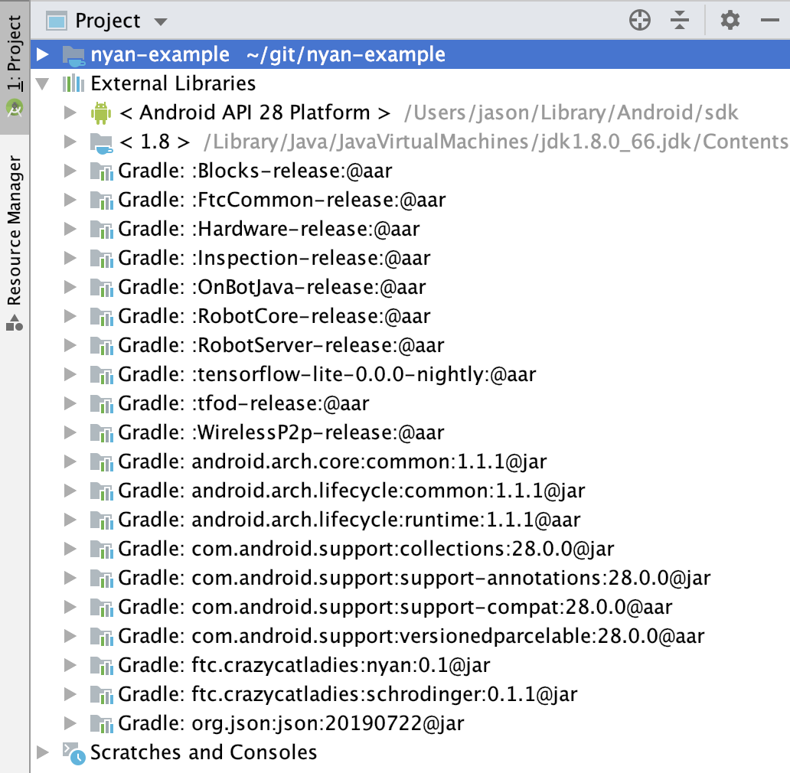

Last Updated: 2020-05-23
What is Nyan?
Nyan is a Java library for use in FTC robot control systems that helps with building subsystems. It is named after http://www.nyan.cat/, because your robot will leave a rainbow trail behind it if you use this library 😉
What is a Subsystem?
A subsystem is a self-contained system within a larger system. In FTC, complex control systems are best organized into multiple Java classes. Mapping these classes to parts of the robot that make a conceptual unit is helpful.
Why use Nyan to implement Subsystems?
Nyan's architecture is based on the Composite design pattern, where objects are composed of objects that are composed, etc. This is helpful to subdivide a robot's control system as in the following example:
Robot, is composed of
....Ball throwing system, is composed of
........Ball collecting system, is composed of
............Motor
............Color Sensor
........Flywheel system, is composed of
............Motor
............Touch Sensor
....Drivetrain system, is composed of...
Nyan builds on another library, Schrodinger, to implement state machines for subsystems. This can be very useful to allow for multiple subsystems to perform a complex series of operations simultaneously. Nyan also uses a data logging system from Schrodinger that provides an easy way to get data which can be used to troubleshoot the operation of your robot.
What you'll build
In this codelab, you're going to create op modes for an FTC robot that use the Nyan library to implement subsystems.
What you'll learn
- How to install Nyan into your FTC Android Studio project
- How to create subsystems using Nyan
What you'll need
- A computer that is able to run Android Studio
- Android phones which are capable of serving as Driver Station & Robot Controller in order to test the op modes, or an Android Driver Station plus a Rev Robotics Control Hub
Install Android Studio
If you do not already have Android Studio installed, follow the instructions for Installing Android Studio
Create the project
If you are familiar with git, create a new clone of the FTC project repository on your computer. Otherwise, just follow these instructions for Downloading the Android Studio Project Folder
Adding the crazycatladies Maven repository
You'll need to let Android Studio (the gradle build system, really) know from where it can download the schrodinger library. Add maven { url 'https://dl.bintray.com/crazycatladies/maven' } to the repositories section at the bottom of the build.gradle file in the root folder of your project.
build.gradle
/**
* Top-level build file for ftc_app project.
*
* It is extraordinarily rare that you will ever need to edit this file.
*/
buildscript {
repositories {
google()
jcenter()
}
dependencies {
classpath 'com.android.tools.build:gradle:3.4.1'
}
}
// This is now required because aapt2 has to be downloaded from the
// google() repository beginning with version 3.2 of the Android Gradle Plugin
allprojects {
repositories {
google()
jcenter()
maven { url 'https://dl.bintray.com/crazycatladies/maven' }
}
}Add the schrodinger & nyan dependencies
You'll make your project dependent on Nyan and Schrodinger, which will cause Android Studio (gradle, really) to download the library, by adding implementation 'ftc.crazycatladies:schrodinger:0.1.1' and implementation 'ftc.crazycatladies:nyan:0.1' to the end of the dependencies section in TeamCode/build.release.gradle
TeamCode/build.release.gradle
dependencies {
implementation project(':FtcRobotController')
implementation (name: 'RobotCore-release', ext: 'aar')
implementation (name: 'Hardware-release', ext: 'aar')
implementation (name: 'FtcCommon-release', ext: 'aar')
implementation (name: 'WirelessP2p-release', ext:'aar')
implementation (name: 'tfod-release', ext:'aar')
implementation (name: 'tensorflow-lite-0.0.0-nightly', ext:'aar')
implementation 'ftc.crazycatladies:schrodinger:0.1.1'
implementation 'ftc.crazycatladies:nyan:0.1'
}Update build settings to enable Java 8
Nyan uses Java 8 features, and you'll probably want to do the same in your own code. You can enable Java 8 by changing the compileOptions section in build.common.gradle (in the root folder of the project):
compileOptions {
sourceCompatibility JavaVersion.VERSION_1_8
targetCompatibility JavaVersion.VERSION_1_8
}Update gradle
After changing and saving these files, you should be able to update gradle by clicking "Sync Now" in the bar which appears at the top of these files:

If everything has gone well, your project will now reference the downloaded schrodinger & nyan external libraries, which you can see in the "Project" view of the Project window:

Create a new opmode class
Create a new Java class in the org.firstinspires.ftc.teamcode package of the TeamCode module called NyanTeleOpMode. If you're not sure how to create an op mode class, refer to Creating and Running an Op Mode (Android Studio)
Start by adding basic code which will display the x & y values for the left stick of gamepad1.
NyanTeleOpMode.java
package org.firstinspires.ftc.teamcode;
import com.qualcomm.robotcore.eventloop.opmode.LinearOpMode;
import com.qualcomm.robotcore.eventloop.opmode.TeleOp;
@TeleOp(name="NyanTeleOp")
public class NyanTeleOpMode extends LinearOpMode {
@Override
public void runOpMode() throws InterruptedException {
waitForStart();
while (opModeIsActive()) {
telemetry.addData("x", gamepad1.left_stick_x);
telemetry.addData("y", gamepad1.left_stick_y);
telemetry.update();
}
}
}Test this out with a gamepad connected to your Driver Station phone.
Add a subsystem class
First we'll add a subsystem class ("Robot") that represents the entire robot. This will later enable us to cascade actions down to all the component subsystems in the robot. Robot inherits subsystem capabilities by extending the Subsystem class. The code for the class is as follows.
Robot.java
package org.firstinspires.ftc.teamcode;
import org.json.JSONObject;
import ftc.crazycatladies.nyan.subsystem.Subsystem;
import ftc.crazycatladies.schrodinger.log.DataLogger;
public class Robot extends Subsystem {
@Override
public void log() {
super.log();
JSONObject json = DataLogger.createJsonObject(this.getClass().getSimpleName(), null);
DataLogger.putOpt(json, "action", "log");
logger.log(json);
}
}From the tele-op mode class, we need to invoke the Robot class at the times when it needs an opportunity to respond to events like initialization, starting, looping, stopping, etc. For this, change the body of the NyanTeleOpMode to the following:
NyanTeleOpMode.java
Robot robot = new Robot();
robot.init(hardwareMap, new OpModeTime(this));
waitForStart();
if (opModeIsActive())
robot.start();
while (opModeIsActive()) {
robot.loop(null);
telemetry.addData("x", gamepad1.left_stick_x);
telemetry.addData("y", gamepad1.left_stick_y);
telemetry.update();
robot.log();
}
robot.stop();Build and run your op mode. Stop the op mode one second after starting. The op mode will automatically create a log named NyanTeleOpMode-1234.log (where 1234 is replaced with a timestamp) on the robot controller sdcard. In the log you'll see that the subsystem creates a log entry for each iteration of the tele op loop.
Child subsystems: The next generation 👶
The subsystem model is not very interesting with only a single subsystem. When we give Robot some child subsystems, though, the usefulness of this approach will begin to appear.
Add the following two classes:
Arm.java
package org.firstinspires.ftc.teamcode;
import com.qualcomm.hardware.lynx.commands.core.LynxGetBulkInputDataResponse;
import java.util.Map;
import ftc.crazycatladies.nyan.subsystem.Subsystem;
public class Arm extends Subsystem {
@Override
public void loop(Map<Integer, LynxGetBulkInputDataResponse> bulkDataResponse) {
super.loop(bulkDataResponse);
// Adjust motor power based on desired position of arm
}
}Drivetrain.java
package org.firstinspires.ftc.teamcode;
import com.qualcomm.hardware.lynx.commands.core.LynxGetBulkInputDataResponse;
import java.util.Map;
import ftc.crazycatladies.nyan.subsystem.Subsystem;
public class Drivetrain extends Subsystem {
@Override
public void loop(Map<Integer, LynxGetBulkInputDataResponse> bulkDataResponse) {
super.loop(bulkDataResponse);
// Adjust power levels of motors according to current direction, velocity, etc.
}
}Then, add the following to the body of the Robot class to add the children:
Robot.java
private final Drivetrain drivetrain = new Drivetrain();
private final Arm arm = new Arm();
public Robot() {
subsystems.add(drivetrain);
subsystems.add(arm);
}As you can see, it was quite easy to add subsystems to our robot, and now we can override methods like start(), stop(), log(), etc. in those subsystems to add additional functionality. In a sense, Subsystem classes are "pre-wired" to participate in all the operations that take place in an op mode, so that you don't have to do that yourself.
Nyan subsystems become even more useful in combination with state machines. Subsystems can define a number of state machines that can control its operation and then switch between these. Take a look at the new version of the Drivetrain class that shows this idea. (Only the body of the class is shown for brevity)
Drivetrain.java
StateMachine driveSM = new StateMachine("driveSM");
StateMachine spinSM = new StateMachine("spinSM");
public Drivetrain() {
driveSM.repeat((state, context) -> {
// Adjust power levels of motors according to current direction, velocity, etc.
});
spinSM.repeat((state, context) -> {
// Adjust power levels of motors to cause spinning
});
}
public void drive() {
runSM(driveSM, null);
}
public void spin() {
runSM(spinSM, null);
}
public void stop() {
currentSM.stop();
}We've only used trivial example state machines here, but it is possible to use ones that are very complex.
Sensor and actuator subsystems made easy
Nyan includes Subsystem classes for commonly-used actuators and sensors so that you can easily compose your own subsystems that include these. The Nyan classes automatically provide logging for these, and they perform caching which reuses data already retrieved for subsequent repeated requests. Snapping in one of these sensor or actuator subsystems gives you a lot of functionality with little effort.
These are the current subsystem implementations in Nyan:
- ColorSensorEx
- DistanceSensorEx
- RevTouchSensorEx
- DcMotorEx
- ServoEx
Special subsystems for actuators
One thing that we commonly found a need for when creating the control systems for our robots was to move a servo or motor to a certain position out of a set of options. The Nyan classes MultiPositionMotor and MultiPositionServo make it easy to implement this.
In the following code (body of class shown only), we add a subsystem which controls the position of the servo which serves as the elbow of our arm. The options for the position of the elbow are defined in the ElbowPosition enumeration. The moveTo function which re-positions the servo accepts, as first parameter, the new position and, as second parameter, the speed at which to sweep the servo to the new position.
Arm.java
public enum ElbowPosition implements ServoPosition {
HOLD(0.95), CAPTURE(0.3), RECEIVE(0.37), PLACE(0.5);
private final double pos;
ElbowPosition(double pos) { this.pos = pos; }
@Override public double getPosition() { return pos; }
}
MultiPositionServo<ElbowPosition> elbow = new MultiPositionServo<>("elbow", ElbowPosition.HOLD);
public Arm() {
subsystems.add(elbow);
}
public void moveTo(ElbowPosition elbowPosition) {
elbow.moveTo(elbowPosition, 0.5);
}Now, from your Robot class you are able to move the arm with code like:
arm.moveTo(Arm.ElbowPosition.CAPTURE);Awesome autonomous automatically
Nyan provides the AbstractAuto class to help you create your own awesome autonomous op mode. It includes the concept of auto config, which you can use to provide configuration for the execution of your op mode while it is initialized. The RedBlueAutoConfig class provides a simple implementation that allows you to indicate whether the robot is on the red or blue side of the field. You can create your own implementation that would provide inputs for specific navigation adjustments or options that you can use to select from a range of strategies at game time.
AwesomeAuto.java
package org.firstinspires.ftc.teamcode;
import ftc.crazycatladies.nyan.auto.AbstractAuto;
import ftc.crazycatladies.nyan.auto.RedBlueAutoConfig;
import ftc.crazycatladies.schrodinger.state.StateMachine;
public class AwesomeAuto extends AbstractAuto {
RedBlueAutoConfig conf = new RedBlueAutoConfig("awesomeauto.conf");
public AwesomeAuto() {
robot = new Robot();
}
@Override protected void configConsole() { conf.configConsole(telemetry, g1, g2); }
@Override protected void readConfig() { conf.readConfig(); }
@Override
protected StateMachine stateMachine() {
return new AwesomeAutoStateMachine();
}
}The real magic of your autonomous then comes down to the collection of subsystems in the Robot class (and its children) and the series of operations that you specify in the AwesomeAutoStateMachine.